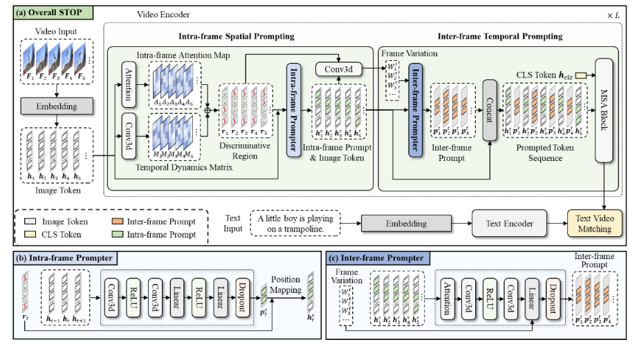

OV³ LAB · PEKING UNIVERSITY
← 返回 Publications 页面向视频理解的空间-时间动态提示集成

"STOP: Integrated Spatial-Temporal Dynamic Prompting for Video Understanding", CVPR 2025
作者: 刘子宸（硕士生），徐昆仑，苏冰，邹旭，彭宇新，周嘉欢
通讯作者: 周嘉欢
通过大规模图像-文本对预训练的CLIP等视觉-语言模型已在众多图像任务中展现出优异的性能。然而，将这些模型扩展到视频任务中仍然面临挑战，主要原因在于标注视频数据的匮乏以及高昂的训练成本。 近期的研究尝试通过引入可学习的提示，将CLIP适应视频任务，但这些方法通常采用单一静态提示来处理所有视频序列，忽视了跨帧的时间动态和空间变化，严重限制了模型对视频理解所需时间信息的提取和利用能力。
针对上述挑战，本文提出了一种面向视频理解的空间-时间动态提示集成方法STOP，旨在通过多层级提示设计引导CLIP模型关注视频数据中的动态区域以增强其对行为和事件的理解。 具体贡献如下：（1）帧内空间提示生成器：基于3D卷积结构生成针对动态区域的空间提示，指导模型关注具有显著时间变化的区域，从而增强模型对视频数据中细粒度信息的捕捉能力。 （2）帧间时间提示生成器：考虑到视频帧之间的动态变化不同，这会影响帧对视频理解的重要性，本文提出了帧间时间提示，以帮助预训练模型关注关键帧。 （3）帧内帧间协同提示：首先基于帧内空间提示识别出的判别区域，进而计算这些区域在不同帧之间的变化程度，对于具有显著时间动态变化的关键帧，利用轻量级的提示生成器动态生成帧间提示，并将其插入到两帧之间，提供细粒度的时间信息，帮助模型聚焦并理解关键帧。 帧内空间提示和帧间时间提示相互补充，指导模型关注关键的空间和时间位置，从而提升其对视频的准确理解。多个视频基准测试中的大量实验表明，STOP相比于现有方法展现出性能优势。
该论文的第一作者是北京大学王选计算机研究所2022级硕士生刘子宸，通讯作者是周嘉欢助理教授，与彭宇新教授合作完成。